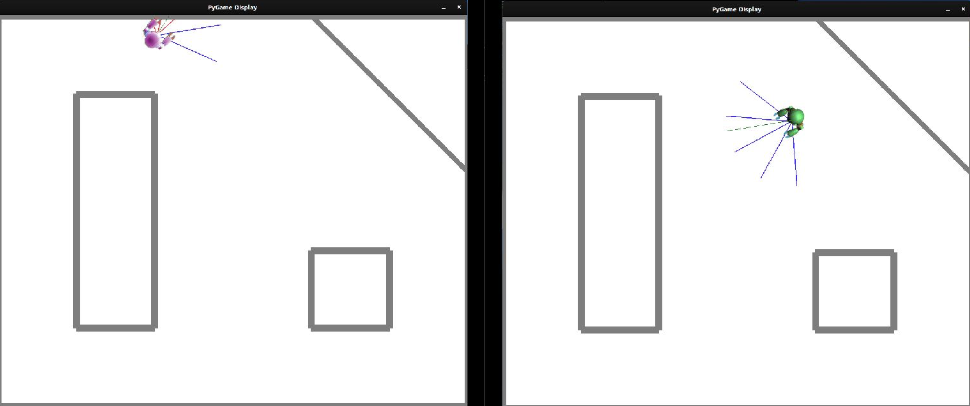

Neural Networks
Tech Stack:

The goal of this project was to help a small robot equipped with 5 distance sensors navigate a simulated environment without any collisions. To do this, I had to first collect training data, package it into an iterable PyTorch DataLoader, design a custom neural network architecture in PyTorch, and then train the network in order to minimize both missed collisions and false positives.
To collect training data, I instructed the robot to wander around the environment (above) without trying to avoid collisions, and I collected a single sample for every action taken, where each sample was a 7-element tuple containing the 5 distance sensor readings, the action taken, and whether or not the action resulted in a collision. After collecting roughly 15,000 samples, I packaged the data into two iterable PyTorch DataLoaders to serve as the training and testing datasets. After normalizing the data, I split each sample into two Tensors (the 5 distance sensor readings and the action in one, and the collision value in the other), and then split the entire dataset 80-20 into the training data and testing data.
Next, I designed the neural network using PyTorch's torch.nn class by initializing the architecture, defining a forward pass, and evaluating the fit of the model for future use. My network was structured as follows: 6 inputs, 2 hidden layers with 50 nodes each, and a single output node. I used the sigmoid function as my nonlinear activation function, and I called it on the results of both hidden layers and before returning the output. In training the model, I used BCELoss as my loss function, as the value of a collision was a binary value. I used 200 epochs with ADAM as my optimizer with a learning rate of 0.01. For each sample in the training dataset, I performed a forward pass, calculated the loss, and then performed backpropagation using the loss.
Over the course of this project, I used many Python libraries, including cython, matplotlib, sklearn, scipy, pymunk, pygame, pillow, numpy, pickle, noise, and PyTorch. If you would like to see the nitty gritty details of my implementation, please contact me at my email below!